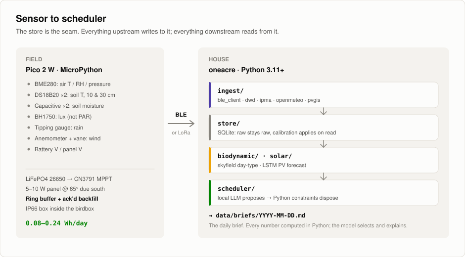
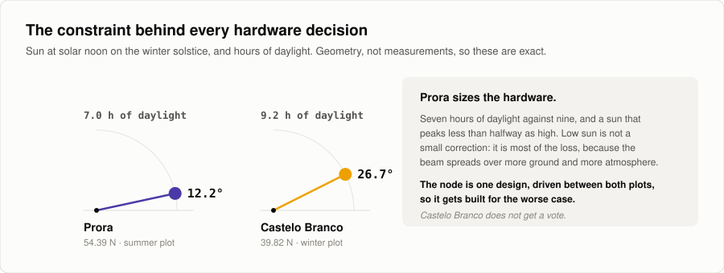
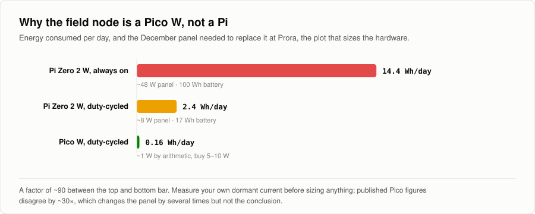
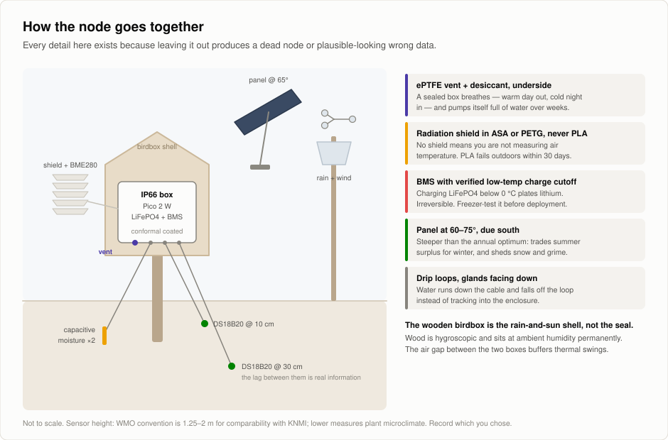
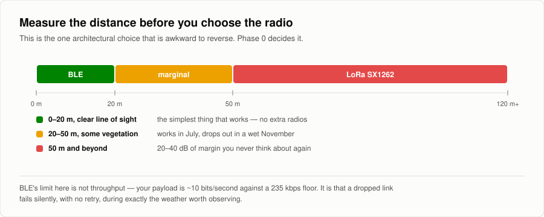
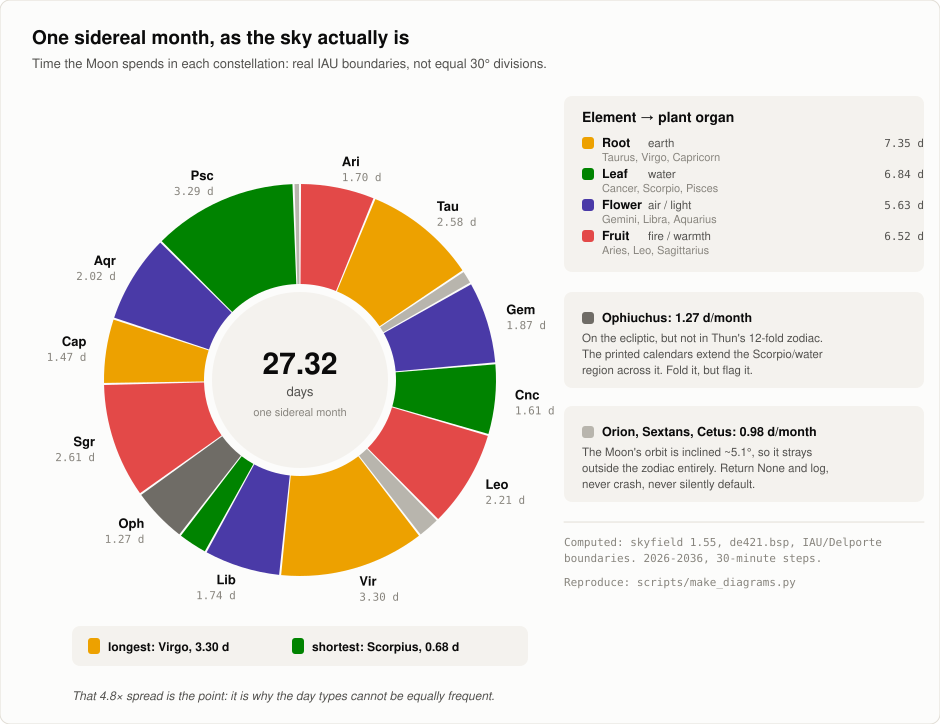
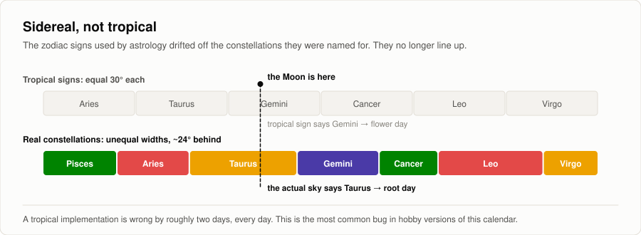
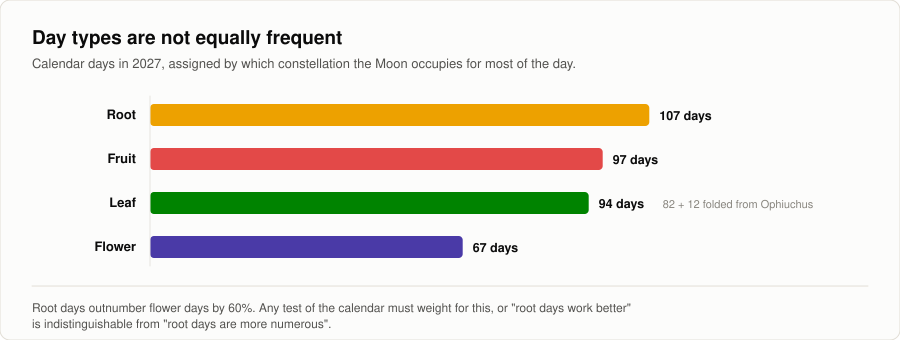
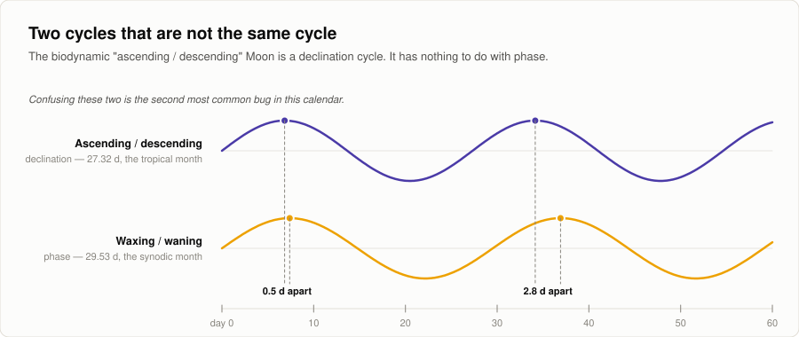
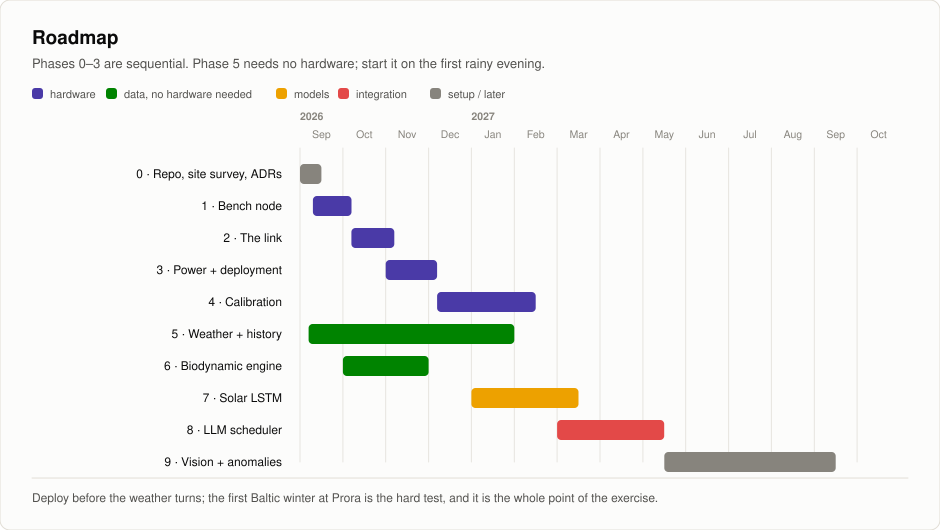

One Acre, Zero Dependency.
Autonominis, DI valdomas ūkininkavimas dviejuose sklypuose, nutolusiuose 2,256 km: Prora vasarą, Castelo Branco žiemą. Vienas klausimas: kokią dalį kasdienių mažo ūkio sprendimų gali priimti tikrai autonominis DI, nuo jutiklio iki planuoklio?


Du sklypai, vienas sezonas
Prora veikia vasarą, Castelo Branco žiemą. Kartu nėra nė vieno mėnesio, kai niekas neauga.
Niekas nepalieka lauko
Nuo saulės iki jutiklio, nuo jutiklio iki nešiojamojo kompiuterio, nuo jo iki plano. Modelis veikia vietoje: tik taip autonomiškumo teiginys atlaiko pirmą sąskaitą.
Modelis siūlo, Python sprendžia
Kiekvienas pasiūlymas praeina fiksuotą taisyklių rinkinį, prieš tapdamas užduotimi. Kas taisyklių neatitinka, atmetama, o atmetimas užregistruojamas.
~/ką tai daro
Jutiklis, istorija, kalendorius, modelis.
Saulės energija maitinamas lauko modulis (Birdbox) renka dirvožemio ir vietos oro duomenis. Open-Meteo istorinis archyvas prideda dvidešimties metų regiono orų istoriją. Eurostat prideda regiono derliaus duomenis, tiesa, apytikslius: metinius, hektarui ir regionui, ne lysvei. Thun kalendorius pateikia sodinimo kalendorių pagal Mėnulį. Šis projektas jį apskaičiuoja teisingai ir patikrina, užuot priėmęs kaip duotybę.
Skaičiavimai atliekami Python kalba. Vietoje veikiantis modelis sugretina rezultatus ir siūlo, kurios kultūros duoda didžiausią derlių vienam sodinimui, kada sėti ir kokia sėjomaina tinka 4,000 m² plotui.
Tikslas: suteikti ūkininkams, mėgėjams ir šeimoms atramą auginti ekologiškai bet kokiu mastu, remiantis šiuolaikine technika ir senomis žemę saugančiomis sąvokomis.
~/kur
Du sklypai, nutolę 2,256 km.
14.6 platumos laipsnio skirtumas. Jūs sekate auginimo sezoną, užuot su juo kovoję.
Prora vasara
- kur
- Rügen, Vokietijos Baltijos pakrantė
- platuma
- 54.39 °N
- atskaitos stotis
- DWD Arkona, stotis 00183, 33 km į šiaurę
- žiemos saulėgrįža
- 7.0 h šviesaus paros meto, saulė pakyla iki 12.2 °
Castelo Branco žiema
- kur
- Centrinė Portugalija, žemyninė dalis
- platuma
- 39.82 °N
- atskaitos stotis
- IPMA ilgosios eilutės, taip pat ERA5-Land
- žiemos saulėgrįža
- 9.2 h šviesaus paros meto, saulė pakyla iki 26.7 °
Prora remiasi DWD Arkona, su išmatuota spinduliuote nuo 1947 metų. Castelo Branco neturi lygiavertės atviros istorijos ir remiasi ERA5-Land. Ši asimetrija neslepiama.
~/įsipareigojimai
Trys dalykai, dėl kurių nedaromi kompromisai.
Autonominis reiškia autonominis.
Jokio debesijos LLM kasdieniame cikle.
Kiekvienas skaičius nurodo savo paklaidą.
€30 kainuojantis jutiklis, deklaruojantis ±0.3 pH tikslumą, negali pateikti pH vieno dešimtainio ženklo tikslumu.
Kalendorius yra hipotezė.
Biodinaminis kalendorius tikrinamas, o ne naudojamas kaip planavimo taisyklė.
~/lauko mazgas
Pico, ne Pi.
Bakstelėkite paveikslėlį, kad pamatytumėte jį visu dydžiu.








~/kalendorius
Thun kalendorius, sąžiningai įgyvendintas.
Įrodymai trigono efekto nepatvirtina. Todėl kalendorius registruojamas kaip kovariantė ir tikrinamas, bet niekada nenaudojamas kaip taisyklė.








~/modeliai
LLM siūlo, Python sprendžia.
Kiekvienas skaičius apskaičiuojamas patikrintu Python kodu. Modelis atrenka, nustato prioritetus ir paaiškina, o grąžina JSON, patikrintą pagal schemą. Kas taisyklių neatitinka, atmetama, o atmetimas užregistruojamas. Tikslas: derlius kvadratiniam metrui.
~/veiksmų planas
Dešimt etapų.


~/pažiūrėkite patys
Skaitykite planą. Skaitykite kodą.
AI-Homestead
Saugykla (repo). Statybos planas, ADR, duomenų šaltiniai ir šio puslapio paveikslai.
PDFProjekto apžvalga
Trumpa santrauka. Du sklypai, trys įsipareigojimai ir ką kiekvienas duomenų šaltinis gali ir ko negali teigti.
Kodui taikoma MIT licencija. Orų duomenys iš DWD (CC BY 4.0), IPMA ir Open-Meteo (CC-BY-4.0). Efemeridės iš JPL per skyfield. Jokie autorių teisių saugomi kalendoriaus duomenys neplatinami.
~/toliau
Tas pats kruopštumas,
jūsų problema.
--:-- Kaune · darbo valandos · Pirm.–penkt. 10:00–18:00